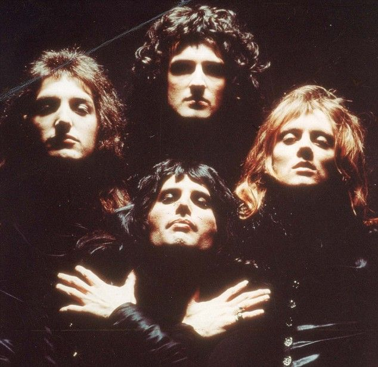
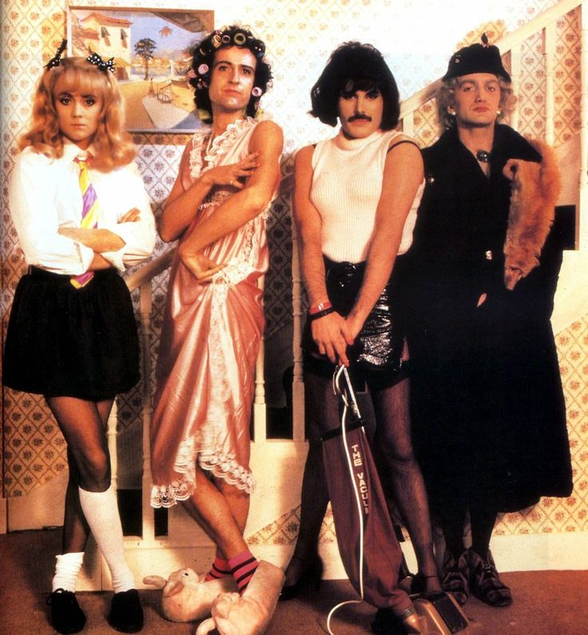
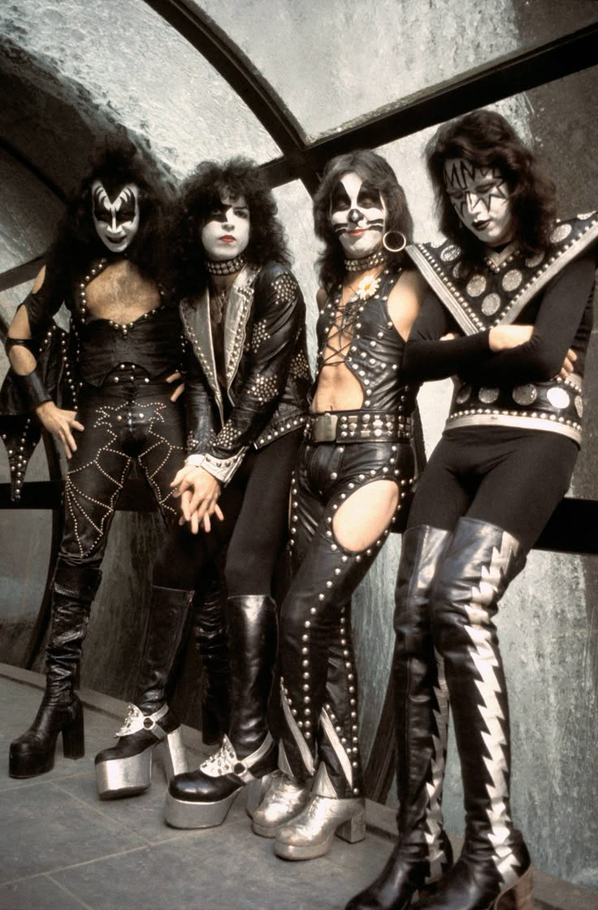
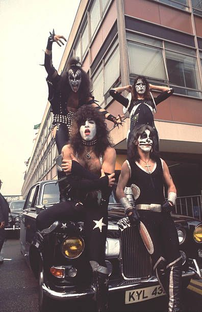
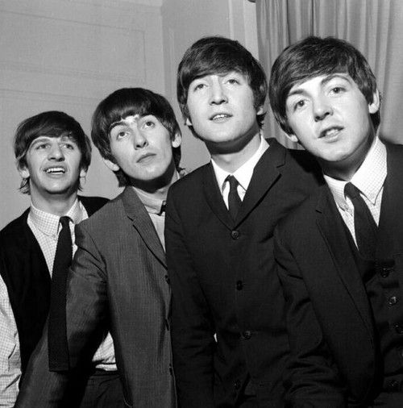
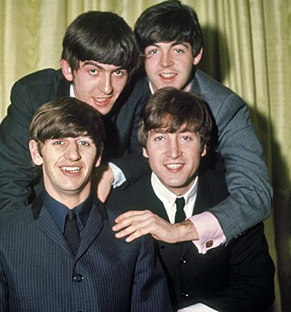

Rock Music
Rock music originated in the 1950s as an evolution of rock and roll, drawing heavily from blues, country, and rhythm and blues traditions. What distinguished rock from its predecessors was its emphasis on electric instrumentation, particularly the electric guitar, which became the genre's defining instrument. Rock music is built around the basic lineup of electric guitars, bass guitar, drums, and vocals, creating a sound that emphasizes power, energy, and emotional intensity. Rock's emphasis on live performance has always been crucial to its identity. Rock concerts are theatrical experiences that combine music with visual spectacle, creating communal experiences that unite audiences in shared energy and emotion. The interaction between performers and audience in rock music is more direct and intense than in most other genres, creating a feedback loop that elevates both the music and the experience.
Most famous Rock singers or bands
Queen
Queen (1970-1995) This British rock band, fronted by the charismatic Freddie Mercury, became known for their theatrical performances and genre-blending music. Their hits include "Bohemian Rhapsody," "We Will Rock You," and "We Are the Champions." Mercury's powerful vocals and stage presence, combined with Brian May's guitar work, made them one of rock's most beloved acts.


KISS
Kiss (1973-) This American rock band, known for their elaborate stage makeup, costumes, and pyrotechnic performances, became icons of theatrical rock. Founded by Gene Simmons and Paul Stanley, they popularized the concept of rock as entertainment spectacle. Their hits include "Rock and Roll All Nite" and "Detroit Rock City."


The Beatless
The Beatles (1960-1970) This Liverpool-based band consisting of John Lennon, Paul McCartney, George Harrison, and Ringo Starr became the most influential band in popular music history. They revolutionized popular music with innovative songwriting, studio techniques, and cultural impact. Albums like "Sgt. Pepper's Lonely Hearts Club Band" and "Abbey Road" are considered masterpieces that changed music forever

